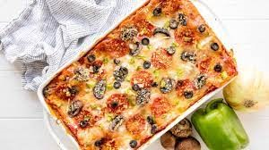

Pizza Lasagna Recipe

Description
Deep Dish Pizza Lasagna:
Deep Dish Pizza Lasagna combines two of your favorite dinner obsessions.
This is where pizza and pasta lovers will find heaven on a plate.
It's easy to customize the toppings too!
Ingredients
- 1pound lasagna noodles
- 4 cups marinara
- 30 ounces ricotta cheese
- 1 large egg
- ½ teaspoon salt
- 1 pound shredded mozzarella cheese
- 1 cup freshly grated Parmesan cheese
- 6 ounces sliced pepperoni
- 8 ounces sliced mushrooms
- 1/2 cup sliced black olives
- 1 diced green bell pepper
Instructions
- Place lasagna noodles into the bottom of a pan.
Pour hot tap water directly over the noodles, making sure the pasta is completely immersed in the water.
Let them soak for 30 minutes, then drain and discard water.
- In a mixing bowl, combine ricotta cheese with egg, and 1/2 teaspoon of salt.
Refrigerate until ready to assemble lasagna.
- Preheat oven to 375 degrees. Lightly grease a deep 9x13 pan.
- To assemble, spread about 1 cup of marinara sauce in the bottom of the prepared pan.
Place 4 noodles on top. Spread with ⅓ of the ricotta cheese mixture.
Top with ¼ of the mozzarella cheese.
Top with 1/3 of the pepperoni slices, 1/3 of the mushrooms,
1/3 of the olives, and 1/3 of the green peppers.
Spoon about 1 cup marinara sauce over the toppings, then sprinkle with ¼ cup parmesan cheese.
- Repeat layering two more times to create three complete layers.
To finish, place a final layer of pasta, topped with another 1 cup of marinara sauce to cover the pasta.
Top with remaining mozzarella, toppings, and Parmesan cheese.
- Bake in preheated oven for 50 minutes. Serve hot.